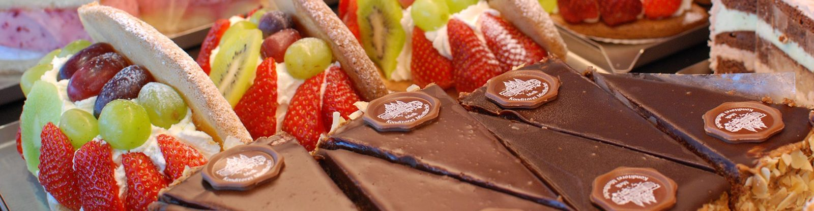

Jede Torten-Kreation ist ein Unikat und wird mit viel Liebe zum Detail von Hand gefertigt. Wir sind Tortendesigner aus Leidenschaft.
Hochzeitstorten
Ein Stück Glück für Ihren Tag
Wir kreieren Ihre ganz persönliche Hochzeitstorte – ein Stück Glück, das Ihr Fest nicht nur versüßt, sondern Ihr Hochzeitsthema raffiniert komplementiert. Von klassisch bis verspielt, von edel bis zuckersüß verziert.
Luftig leichter Biskuit, Schichttorten oder saftige Nuss-Schokoladetorten
Cremig frische Füllungen, lockeres Mousse oder luftig leichte Ganache
Klassisch-elegant, mehrstöckig oder als Naked Cake
Fondant-Torten für das nächste Familienfest
Was gibt es Schöneres als einen Tisch voller Naschereien? Für den schönsten Tag in Ihrem Leben arrangieren wir auch Ihre individuelle Candy Bar oder kreieren süße Gastgeschenke.
Ob runder Geburtstag oder Kinderparty: Wir backen Ihre personalisierte Geburtstagstorte – Tortenkunstwerke für kleine Prinzessinnen oder coole kleine Feuerwehrmänner. Ein bisschen Glitzer hier, ein bisschen Goldstaub da oder in Regenbogenfarben.
Taufe, Erstkommunion, Firmung
Ganz besondere Momente verdienen ein viel bestauntes Torten-Kunstwerk. Zur Taufe, zum Kinder-Willkommensfest, zur Erstkommunion oder Firmung – alle individuellen Torten werden mit viel Liebe zum Detail per Hand dekoriert und verziert.
Candy Bar
Ein Tisch voller Naschereien und Süßigkeiten, abgestimmt auf Ihr Fest – dazu süße Gastgeschenke für Ihre Gäste.
Motivtorten
Selbst ausgefallene Wünsche sind kein Problem: Bei uns wird gebacken, gefüllt und modelliert, bis das Motiv steht.
Anlässe im Jahresüberblick
Feste soll man feiern, wie sie fallen
Traditionell, originell oder mit Guss und Glitzer – entdecken Sie unsere Genusswelten und vielfältigen Möglichkeiten.
Hochzeiten
Was sagt mehr als 1000 Worte? Eine wunderschöne Hochzeitstorte.
Geburtstag
Klassisch-elegant, originell oder mit Guss und Glitzer.
Taufen & Firmungen
Ein besonderer Anlass verdient ein viel bestauntes Torten-Kunstwerk.
Frühstück
Zuerst gehen wir frühstücken, dann schlemmen wir einen Eiskaffee.
Muttertag
Liebevoll verzierte Kuchen, Muttertagstorten in Herzform und handgerollte Pralinen in schöner Verpackung.
Eisspezialitäten
Die Leichtigkeit des Sommers – als Heiße Liebe, Dolce Vita oder Eis am Stiel.
Silvester & Neujahr
Verschenken Sie Glück, das auf der Zunge zergeht.
Fasching
Wir erklären den Fasching zum Naschkatzenfest.
Valentinstag
Wenn Liebe in der Luft liegt, versüßen wir Ihren Überraschungsmoment.
Ostern
Wenn Mehlspeis-Duft weht um die Nasen: liebe Grüße vom Mistlbacher Osterhasen.
Advent
Zimt, Vanille und viele Naschereien – der Weihnachtsduft liegt bereits in der Luft.
Weihnachten
Kekse, Kletzenbrot und Lebkuchen: In unserer Weihnachtsbäckerei finden Sie so allerlei.

Aus unserer Tortenvitrine.
So läuft eine Tortenbestellung
Von der Idee zum Kunstwerk
Anfrage: Anlass, Termin, Personenanzahl und Wunschmotiv bekanntgeben.
Beratung: Wir besprechen Biskuit, Füllung, Dekor und Größe – persönlich oder telefonisch.
Fertigung: Gebacken, gefüllt, modelliert und von Hand dekoriert.
Abholung: In Klein-Pöchlarn, im NVZ oder in Melk – zum vereinbarten Zeitpunkt.